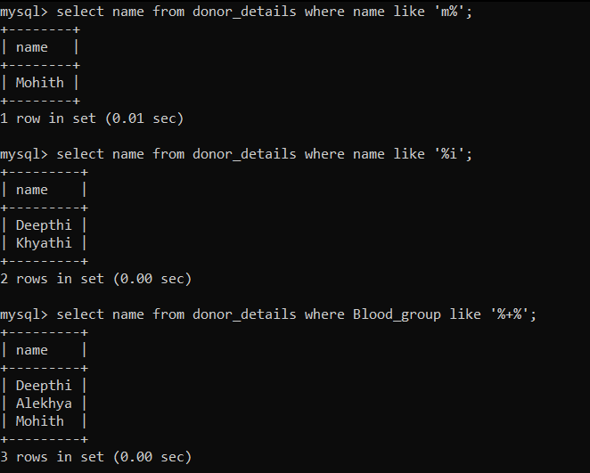

- The LIKE operator is used in a WHERE clause to search for a specified pattern in a column
- There are two wildcards often used in conjunction with the LIKE operator:
- The percent sign (%) represents zero, one, or multiple characters
- The underscore sign (_) represents one, single character
